June 2014 Restoration Project
This months project is a 71 Super Beetle that has been stripped, sand blasted and rust repaired. We painted a nice facory yellow color with new rubber and trim hardware
New seats have been installed as well as new upholstery front and back. A brand new set of tires and hubcaps top off this 71 classic Beetle., This Beetle will be up for sale around Mid-July 2014
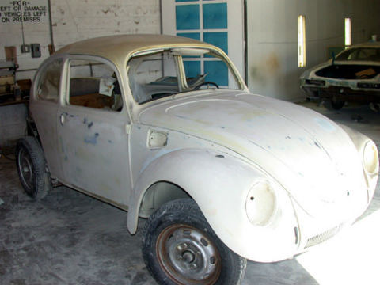
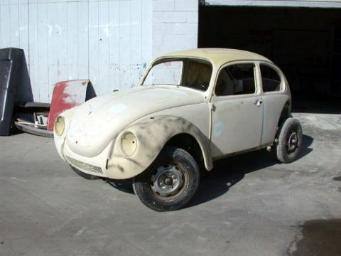
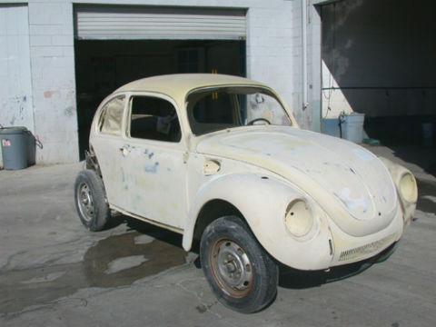
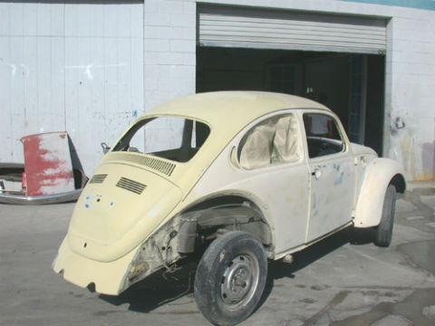
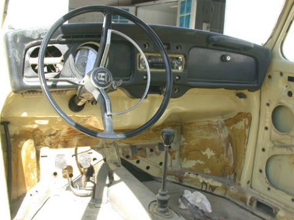
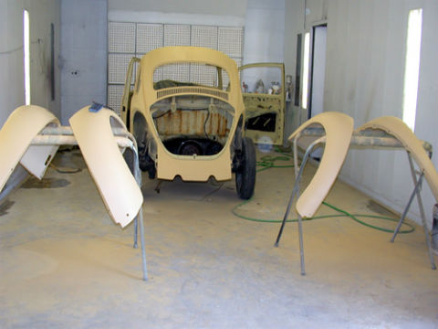
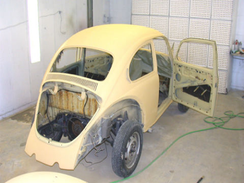
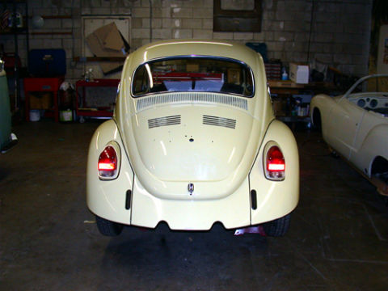
 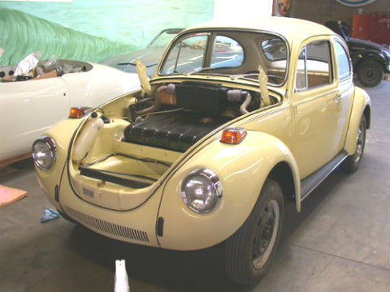
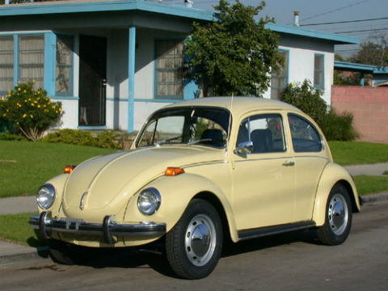
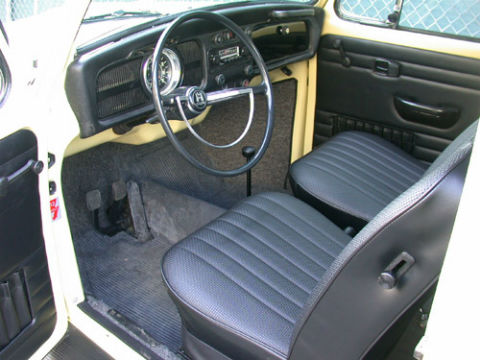
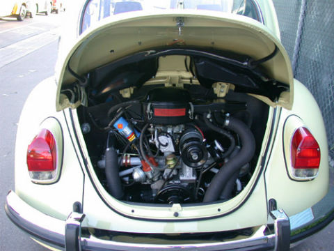
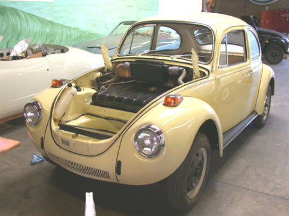
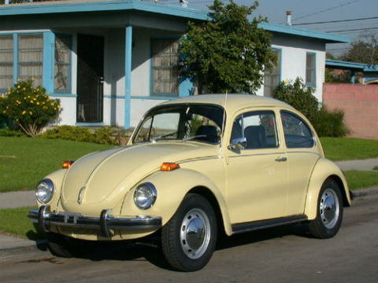
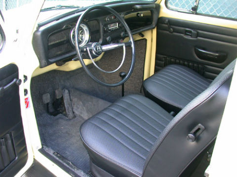
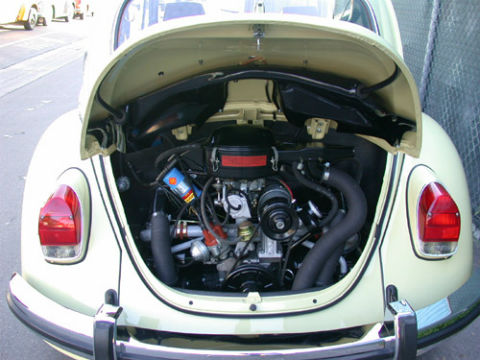

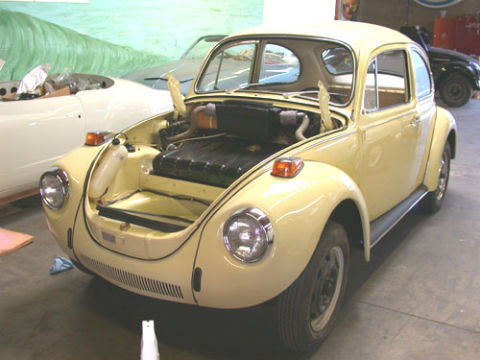
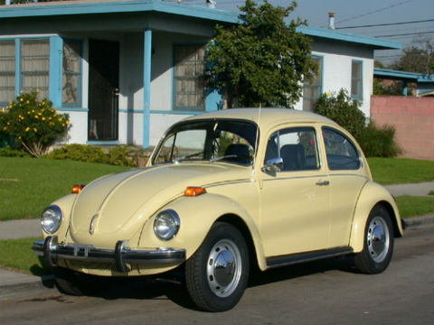
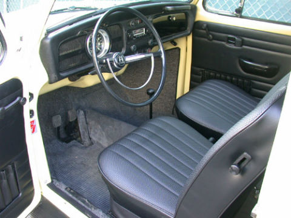
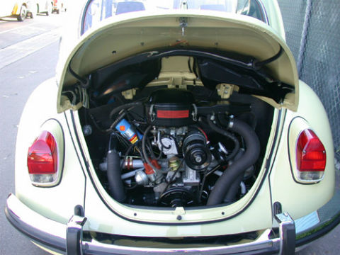